7월 31일은 H의 생일이다. 많은 사람들이 그렇듯, H도 자기 생일을 덧없이 흘려보내는 걸 좋아하지 않는다. 마침 올해 7월 31일은 금요일이었다. 바로 뒤에 주말이 붙어 있으니, 생일을 명분 삼아 놀기엔 더할 나위 없이 좋은 멍석이 깔린 셈이다.
이번 생일은 어떻게 즐겁게 보내 볼까 고민하던 중, H는 충무김밥이 먹고 싶다고 했다. 생일이 되어서 갑자기 떠오른 게 아니라, 7월 들어서 몇 번이고 했던 말이었다. 그렇다면 답은 거의 정해진 것이나 다름없다. 충무김밥의 성지. 동양의 나폴리. 대전에서 적당히 멀리 떨어진 좋은 위치. 우리는 지도에서 통영을 찍고 2박 3일 동안 놀 계획을 세웠다. H가 늘 그랬듯이 좋은 숙소와 식당을 찾아냈고, 나는 이 일정에 방해되지 않도록 주초부터 실험 계획을 조절해 2박 3일을 완전히 비울 수 있도록 만들었다.
그리하여 생일 당일, 내가 오전에 마지막으로 할 일을 끝내고 우리는 11시가 조금 넘어서 대전에서 출발했다. 대전에서 통영까지는 대전-통영 고속도로가 깔려 있어서 고속도로에 한 번 올라가면 200km 가까이 직진만 하면 된다. 운전하는 입장에서는 아주 마음이 편안한 경로다. 원래 계획은 통영까지 논스톱으로 달려서 충무김밥으로 늦은 점심을 먹는 것이었는데, 중간에 배가 고파져서 함양 휴게소로 들어갔다. 휴게소 정식이라고 할 수 있는 라면에 밥, 돈까스를 먹었다.
통영에 도착했을 때에는 세 시가 조금 넘었다. 우리가 이번 여행의 테마로 설정한 음식은 충무김밥과 다찌였다. 다찌가 뭔지 몰랐는데, 통영에만 있는 술상 문화라고 했다. 일정 금액만 내면 주인장 마음대로 한 상 코스를 내주는 거라던가. 나도 H도 다찌를 먹어 본 적은 없어서, 이번 숙소는 다찌집들이 모여 있는 곳 근처로 잡았다.
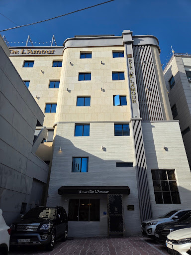
우리는 가기 전부터 숙소 근처에 있는 다찌집들의 리뷰를 살펴보며 어느 다찌로 가야 할지 계획을 세웠다. 그래서 숙소에 도착하자마자 짐부터 풀고, 오픈 시간이 임박했기에 거의 곧바로 나와 숙소 근처의 은하수다찌라는 식당으로 향했다. 그랬는데…
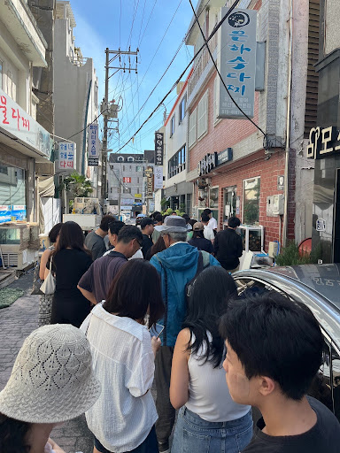
우리는 이번에도 안일했다. 16시 오픈이고 우리가 도착했을 때에는 15:50이었는데 줄이 이미 이렇게 늘어서 있었다. 조금 후에 직원분이 나오셔서 손님을 받기 시작했는데, 우리 서너명 앞에서 끊겨버렸다. 다행히(?) 우리 바로 앞 팀은 그냥 다른 곳으로 가겠다며 빠졌고, 우리는 대기 1번이 되었다. 직원에게 물어보니 보통 1시간 반 정도면 자리가 난다고 했다. 사실 일부러 다찌 골목에 숙소를 잡은 덕분에, 은하수다찌는 우리 숙소에서 걸어서 5분밖에 안 걸리는 거리에 있었다. 우리는 미련 없이 번호를 적은 뒤 숙소로 돌아갔다.
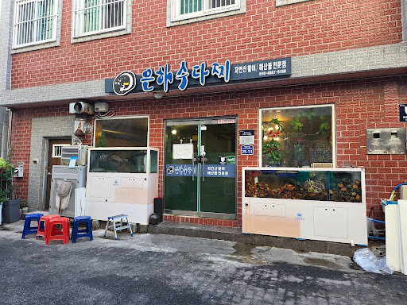
에어컨 틀어 놓고 숙소에서 웹툰이나 보며 뒹굴거리다가, 17:25쯤 되어 다시 다찌로 나갔다. 가게 앞에 도착한 지 정확히 5-10분만에 손님이 나오고 자리가 났다. 일이 착착 풀리는 느낌. 우리는 들어가서 다찌 2인분에 소주와 맥주를 시켰다.
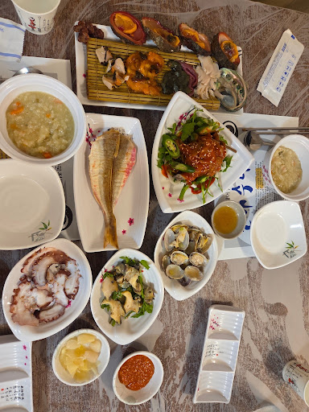
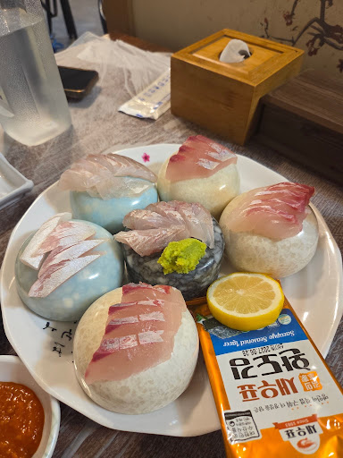
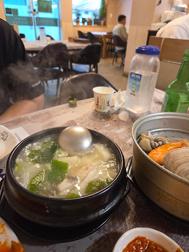
전복죽을 시작으로 돌멍게, 해삼, 전복, 개불로 구성된 스끼다시가 깔리고, 방어를 포함한 생선회, 멸치회무침, 조기구이, 생선구이, 문어숙회, 바지락, 방풍전, 지리탕, 조개/새우찜까지 나왔다. 특히 막바지에 나온 저 지리탕이 맛있었다. 이미 소주 두 병을 마신 상황이었는데, 배만 좀 덜 불렀어도 소주를 한 병 더 마셨을 것이다.
다찌골목 반대편에는 통영 중앙시장이 있었다. 술도 들어가고 배도 불렀기에, 우리는 좀 걸으면서 소화를 시켜보기로 했다. 우리는 예전에 부산에서 먹부림을 부리고 소화시키는 과정을 생략했다가 둘 다 배탈이 나서 병원 신세를 진 적이 있다. 그 때의 기억이 깊게 박혀서, 그 뒤로는 여행에서 먹부림을 좀 부렸다 싶은 날이면 누가 먼저랄 것 없이 꼭 산책을 나가곤 한다. 바닷가라 그런지 시장에는 해산물들이 즐비하게 깔려 있었다. 배불러서 걷기 시작한 주제에, 회를 포장해다가 먹어도 괜찮겠다 하며 먹는 얘기만 잔뜩 하던 우리는 갑작스런 새똥의 습격으로 경로를 급선회했다.
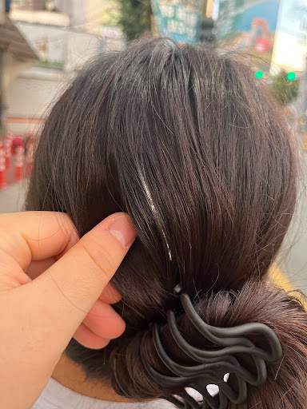
ㅋㅋㅋㅋㅋㅋㅋㅋㅋㅋㅋ 어차피 날이 더워서 둘 다 땀도 많이 났으니, 새똥 맞은 김에 숙소로 돌아가서 둘 다 씻었다. 씻고 나오니 슬슬 해가 져서 어두웠다. 밥은 충분히 먹었고, 걸어서 술은 살짝 깼는데 이대로 하루를 끝내기는 아쉬우니 우리는 안주 없이 술만 먹을 수 있는 곳으로 다음 행선지를 정했다.
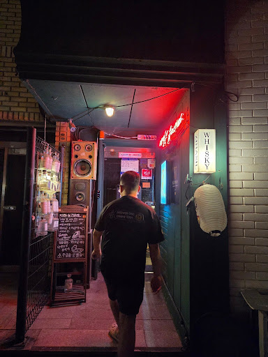
이곳은 지하실이라는 바였다. 영어로 zihasil이라고 썼던 것 같다. 인터넷에 남은 평이 좋았고 숙소에서 멀지 않은 거리에 있어서 걸어갔는데, 가는 경로에 횡단보도와 바리케이트가 애매하게 놓여 있어서 조금 비효율적으로 돌아갔던 기억이 난다.
바 지하실은 이름 그대로 지하에 있었는데, 내려가는 길목의 벽과 문에 잔뜩 ‘강빨금지’ ‘우빵금지’ 같은 문구가 적혀 있었다. 한두 번도 아니고 수십 개가 적혀 있길래 대체 이게 무슨 말인지 궁금해서, 우리는 바 테이블에 앉자마자 사장님한테 이 뜻부터 물어봤다. 사장님은 다소 험상궂은 곰 같은 인상이었는데, 하도 술 마신 경험 가지고 남들에게 허세를 부리고 남들을 무시하는 사람들이 꼴 보기 싫어서 적어놓았다고 했다. ‘내가 한 잔에 십만원짜리도 마셔 봤는데~’ 하면서 같이 온 일행들에게 허세를 부리는 사람이 있었다나. 사장님 본인은 한 병에 삼천만원짜리도 마셔 본 입장에서 같잖은 수준이라 보기 싫었다고 했다. 다만, 우리가 보기엔 사장님도 다소 가오가 있는 스타일이긴 했다. 통영에 오기 전에는 싱가폴에서 일하셨다고 하는데 그 때 월 매출이 몇억이었다던가, 최소 수중에 몇천만원은 떨어졌다던가… 그래도 우리가 불쾌할 만한 말은 아니어서 재밌게 들었다.
처음 가 보는 바였으니 간단한 칵테일부터 시켰는데, 사장님이 만든 칵테일들은 상당히 맛있었다.
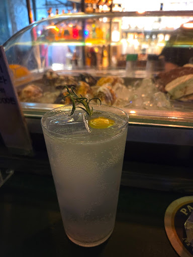
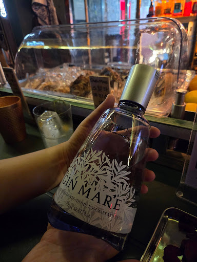
진 피즈에서부터 맛이 남달라서 기주를 뭘 쓰셨는지 여쭤봤는데, Gin MARE 라는 진이었다. 이 진이 아주 맛있었다. 여기에서부터 사장님이 감다살이라는 느낌이 좀 나서, 이곳의 오리지널 칵테일을 시켜 보기로 했다. 주방 한쪽 구석에서는 사장님이 직접 진을 만들고 있었는데, 토마토를 사용한 진이라고 시향을 시켜주셨다. 나는 원래 토마토를 좋아하는데 이 진이 향도 괜찮았고, 사장님이 칵테일 빚는 센스가 좋으신 것 같아서 이 토마토 진을 사용한 토마톡톡이라는 오리지널 칵테일을 주문해 보았다.
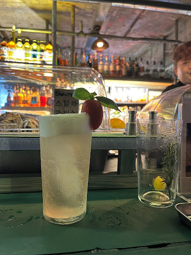
맛있었다. 블러디 메리랑은 좀 다른 느낌의 토마토 맛. 너무 진하지 않고 은은한 토마토의 존재감. H는 사장님의 시그니처이자 이 바의 최대 아웃풋이며, 싱가폴 시절에도 매장의 매출을 책임졌다는 진 바질 스매쉬라는 칵테일을 시켰다. 칵테일에 들어가는 바질을 가는 것부터 우리 눈앞에서 보여주셨는데, 진짜 바질이 엄청나게 많이 들어갔다. 진 바질 스매쉬는 가격이 유독 비쌌는데, 그 가격이 이해가 되는 장면이었다. 술은 마시지도 않았는데 바질향이 바 테이블에 진동을 했다.
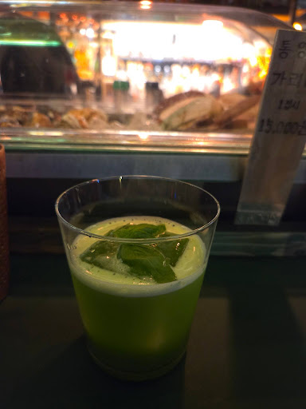
그렇게 완성된 진 바질 스매쉬. 진짜 맛있었다. 바질을 많이 쓰길래 너무 과한 거 아닌가 싶었는데, 밸런스가 잘 잡혀 있었다. H는 감동해서 이걸 다 마시고 한 잔을 더 시켰다. 나는 처음에 gin MARE에 감동을 받아서 다음 잔으로는 드라이 마티니를 시켰는데, 버무스로 Noilly Prat이 나오는 걸 보고 속으로 ’역시’를 외쳤다.
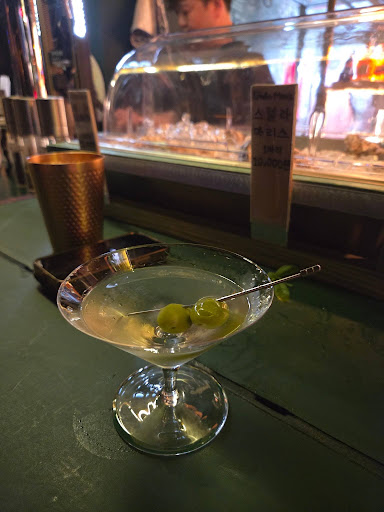
술은 이쯤에서 마무리하고 나왔는데, 시간이 많이 늦어서 대부분의 점포가 문을 닫은 와중에 해장 겸 야식이 또 먹고 싶어졌다. 통영에서 충무김밥을 먹다 보면 꼭 옆에 시락국이 나오는데, 나는 시락국을 아주 좋아한다. 늦은 시간이라 연 가게가 거의 없었지만, 걷다 보니 다행히 작은 점포 하나가 영업중인 걸 발견할 수 있었다. 가게 안에는 기사님들로 보이는 아저씨 둘이서 시락국을 드시고 계셨는데, 누가 봐도 진짜 단골인 느낌이라 가게를 잘 선택했다는 감이 딱 왔다. 심지어 아저씨들은 나갈 때 음식값을 달아놓은 금액에서 까라고 했다. 그들은 진짜였던 것이다.
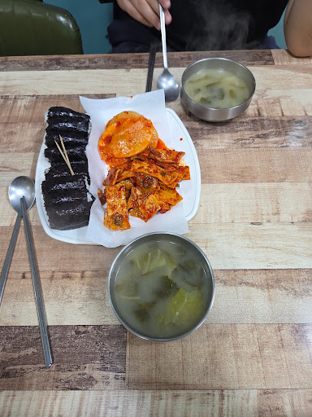
오랜만에 먹으니 아주 맛있었다. 충무김밥은 뭐 들어가는 것도 없는데 이상하게 맛있다. 석박지도 어묵도 다 맛있었고, 시락국도 훌륭했다. 좋은 해장이자 야식이었다.
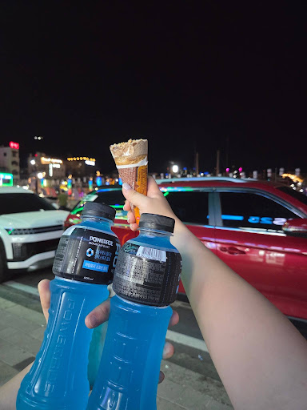
마지막으로 돌아가는 길에 이온음료와 아이스크림까지 먹어준다.
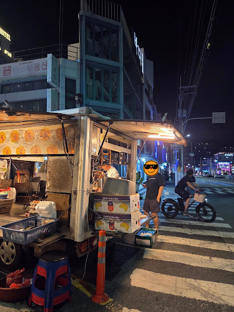
…는 아니고 찐막으로 떡볶이까지 샀다. 이 날은 그렇게 떡볶이까지 알차게 먹고 꿀잠에 들었다.